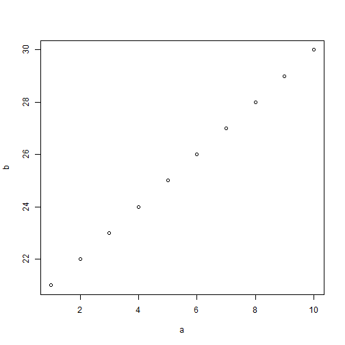

- Edit YAML front matter
- Write using R Markdown
- Use an empty line followed by three dashes to separate slides!
Stratos Moschidis
summary(cars)
## speed dist
## Min. : 4.0 Min. : 2
## 1st Qu.:12.0 1st Qu.: 26
## Median :15.0 Median : 36
## Mean :15.4 Mean : 43
## 3rd Qu.:19.0 3rd Qu.: 56
## Max. :25.0 Max. :120
##Slide 3:A plot in the presentation
let's put some plot here: 
.class #id